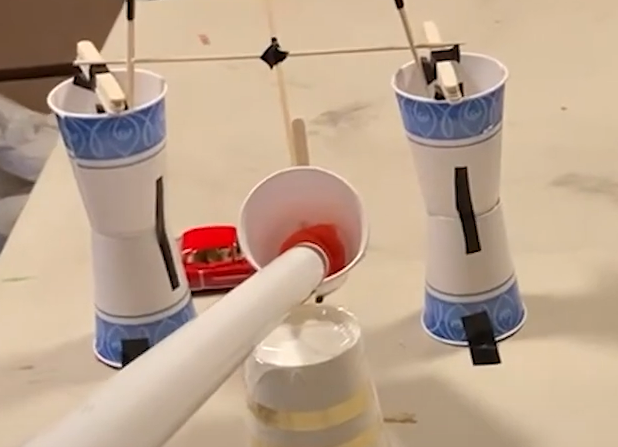
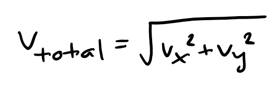
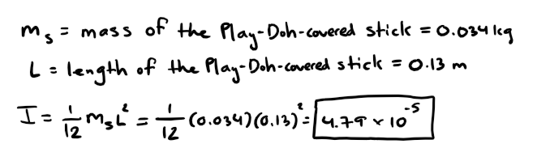

Welcome to our Rube Goldberg website! Join Sisyphus as we explore the toils and struggles he and his physics saviors encountered throughout this journey.
Click on images to enlarge them, watch the embedded videos, and use our table of contents for easy navigation!
FINAL VIDEO
Uncut Length: 24 seconds
SISYPHUS NEEDS HELP! - THE STORY

In the bleak pits of Tartarus, Sisyphus’ eternal torment has been just short of impossible. His penance for cheating death seemed cruel but simple: pushing a boulder to the top of a hill. However, every time he completes this Herculean task, he is greeted with an even more cruel fate: the boulder rolls back down the hill. Amidst the blood, sweat, and tears of the past 10,000 years, Sisyphus’ only rest occurs on his hour walk back to the bottom. Until today.
The gods of Carney 104 have taken pity on Sisyphus’ poor soul and wish to help carry the boulder. Unfortunately, Hades, ruler of the underworld, does not take lightly to people directly interfering in his realm. The solution? Help Sisyphus in secret. Today, we have built a machine worthy of the gods that only requires the touch of a marble to set Sisyphus free from his eternal tragedy. The stakes have never been higher. To fail is to subject Sisyphus to a fate more difficult than death. An existence of futility.
MATERIALS
- PVC pipe
- Hot Wheels track
- Balloon (with water inside)
- Skewer
- String
- Mousetrap
- Dominoes
- Marble
- Play-Doh
- Duct tape
- Electric tape
- Plastic cups
- Popsicle sticks
- Spring car
- Cardboard
- Plastic bag
- Straw
MEASUREMENTS
- Mass of Sisyphus' boulder: 0.057 kg
- Mass of spring car: 0.088 kg
- Mass of 1 cup: 0.007 kg
- Mass of pendulum cup with Play-Doh: 0.023 kg
- Mass of Play-Doh-covered stick: 0.034 kg
- Length of Play-Doh-covered stick: 0.13 m
- Length of PVC pipe: 0.762 m
- Length of mouse trap hammer: 0.05 m
- Length of Hot Wheels track: 0.33 m
- Distance from bottom of cup to ground: 0.34 m
- Mass of final cup with water: 0.164 kg
INITIAL ENGINEERING DESIGN
FINAL ENGINEERING DESIGN - CARTOON/SIDEVIEW

ENGINEERING DESCRIPTION
Step 1 (Analyzed): Marble Down PVC Pipe

The machine begins with Casey - Sisyphus’ savior - dropping a marble down a PVC pipe. The marble initially has potential energy, which is quickly converted to kinetic energy as it gains speed. The marble then rolls into a cup, beginning the next step.
Step 2 (Analyzed): Pendulum Swings

Upon receiving the marble in an inelastic collision, the cup begins its motion in the form of a pendulum. The cup makes contact with a Play-Doh-covered stick, which functions as a stopper for a spring-loaded car. The cup first has potential energy and gains kinetic energy as it approaches the lowest point. Then it oscillates back and forth in simple harmonic motion after being dampened from the collision.
Step 3 (Analyzed): Stopper Knocked Over

After the pendulum collides with the cup, the impact torque force causes the stopper to have rotational motion as it topples over. This releases the spring-loaded car as the friction force that initially held the car back is no longer present. The stopper gains rotational kinetic energy and loses potential energy as falls toward the table.
Step 4 (Analyzed): Spring-loaded Car Released

The spring-loaded car, which was full of elastic potential energy, accelerates quickly as soon as the stopper is out of its way. The potential energy is stored in a spring, which decompresses to propel the car forward.
Step 5: Dominoes Knocked Over

The spring-loaded car sets off a series of dominoes. Each domino applies a torque to the subsequent domino. Energy is fully transferred between dominoes because, following a collision, a domino lays flat on the table (height is 0), which means it has no potential energy. The rotational kinetic energy gained is used to knock over the next domino. This chain reaction continues to the next step.
Step 6 (Analyzed): Mouse Trap Activated

The final domino falls into a vertical mouse trap. As the PE transforms into KE while the domino gains speed, its impact force overcomes the friction force of the mechanism holding the set trap. The trap is then activated. The elastic potential energy in the trap is converted into rotational kinetic energy. Finally, the arm slams into the water balloon, with enough energy and force to overcome the balloon’s material elasticity, thus popping it.
Step 7 (Analyzed): Cup Fills Up

After the water balloon is popped, water begins flowing into a cup through a funnel. Through controlling the flow of water, the mass of the cup increases at a constant rate. Before the pulley begins moving, the cup needs to gain enough mass to overcome the tension force of the rope. The tension force is opposed by the gravitational force of the boulder along the incline and the small friction force.
Step 8 (Analyzed): Pulley Saves Sisyphus

Once the cup has filled up, its potential energy is gained and lost as its mass increases but height decreases. This quadratic relationship is modeled below. At the same time, the boulder gains translational kinetic energy, rotational kinetic energy, and potential energy while it goes up Sisyphus' enormous mountain: the Hot Wheels track. Through a friction force that supplies torque, the boulder is able to roll up without slipping, thus retaining the conservation of energy.
ENGINEERING DESIGN PROGRESSION
Although the initial and final designs largely held the same premise, there were some changes to note. First, instead of the marble directly hitting the car stopper and the car hitting the rotation lever, the marble hits a pendulum which then displaces the car stopper. This change was implemented due to the initial rotation lever being unfeasible. The lever would have to stop the car’s motion while retaining enough energy to freely swing. Instead, a pendulum-like device would have better simple harmonic motion that can more consistently progress to the next step. The final change was the organization of the pulley contraption. Instead of the funnel dropping water onto a track that would lead to the cup, the funnel directly pours into the cup placed vertically below it. This would allow for the increase in mass to remain consistent and linear, rather than the unpredictability of having a “water slide.” These changes were implemented through successive building trials, failures, and successes, and the final result couldn’t have made Sisyphus more proud!
BUILDING THE MACHINE - FAILURES AND SUCCESSES
We completed all of the building and testing at Joseph’s house over the span of two days. On the first day, we focused on developing our initial design and making the key components of the machine. We also aimed to record a single step for the assignment we had for class. The second day involved completing and testing the machine as well as making slight alterations until we had a complete video. Please continue reading for a more detailed description of the various phases and the challenges and successes.
Phase #1: Building the Pulley
For the first assignment, we decided to choose the pulley as the step we would create and record. We knew the pulley would likely be the most intricate, so we wanted to make progress on it as soon as possible. We watched some tutorials on YouTube and concluded that we could use cardboard, a bottle cap, glue, string, and a skewer. The skewer would go through two circular pieces of cardboard, and a bottle cap would be in the middle and glued to both sides. The bottle cap allowed for the pulley to have smoother rotation, though it was still non-ideal since it had notable mass and there was friction. Overall, the friction was minimal, as we later found that the energy lost by the cup attached to the pulley roughly equaled the energy gained by the boulder (success 1). Therefore, the design of our pulley lent well to the principles of the conservation of energy.
One challenge we faced with the pulley was that the string on the bottle cap sometimes got stuck right next to one of the cardboard circles (challenge 1). We often forgot to check before each run, so the pulley would unexpectedly move very slowly. To overcome the obstacle, we taped down stacks of popsicle sticks on both sides of the axel of the pulley. As a result, the pulley was kept sturdy and the string shifted fewer times.
Without the popsicle sticks keeping the axle sturdy, the string shown above would easily move from side to side, disrupting the rotation of the pulley.
Phase #2: Building the Pendulum
Our first workday was dedicated to constructing the pulley. For the second workday, we began by working on another contraption: a pendulum. There were a few important constraints for the pendulum. First, the mass swinging from the pendulum had to have enough surface area to contact the stopper so the spring-loaded car could be released. Second, the mass needed to initially be attached to the PVC pipe and have a hole to accept the marble. This constraint meant that the mass could not be too heavy because, otherwise, it would slip when trying to attach it to the PVC pipe. We decided to use a simple cup because it was light and could easily be attached to the PVC pipe with a small amount of Play-Doh (success 2).
While we eventually began to use Play-Doh, we initially used a cup by itself, which presented a few problems. First, the cup was not heavy enough alone to knock over the stopper (challenge 2). Also, it was difficult to attach the cup to the PVC pipe without using a strong tape that would prevent motion (challenge 3). Play-Doh served as the solution to both the problems. We put a small amount of Play-Doh in the cup to increase its mass. Knowing that a Play-Doh surface would have high friction, we then put Play-Doh between the top of the cup and the PVC pipe to consistently catch the marble without the cup slipping too early. The speed of the marble was still sufficient to separate the cup from the PVC pipe and begin the pendulum motion.
The Play-Doh shown above in the cup was key to achieve the mass necessary to tip over the stick in a collision.
Phase #3: Creating the Car Stopper
Along with the cup, the stopper for the spring-loaded car also had important mass constraints. It needed to be light enough to be knocked over while also having a coefficient of friction high enough to prevent movement of the car. At first, we tried to use a small circular plastic container. While it stopped the motion of the car, its structure made it difficult for the cup attached to the pendulum to knock it over (challenge 4).
We knew that Play-Doh has a high coefficient of friction, so we thought that it could be used for this problem as well. We inserted a popsicle stick into a ball of Play-Doh, which was both light and able to prevent the car’s motion. This approach was effective, and we kept it for the final product (success 3).
Old stopper
Improved stopper (after it's been knocked over)
Phase #4: Knocking over Dominoes
Now that the spring car was being released properly, we had to make sure it went in the correct direction to initiate the chain of dominoes. We faced a simple yet tedious problem: the car would often miss the first domino due to unintentional inconsistencies in its spring potential energy (generated by pulling the car backward) and the angle it was rotated when setting up (challenge 5).
The solution that we found worked best was using tape to keep a lengthy piece of cardboard vertical and in front of the first domino (success 4). As a result, even with a greater margin of error in the car’s motion, the chain of dominoes would nearly always be set off. We were also able to save time testing this way since there were no more trials in which the dominoes remained standing due to errors in the positioning of the car.
Example of car not making full contact with first domino
Phase #5: Setting Up Mousetrap and Balloon
We encountered the most obstacles when trying to get the mousetrap to pop a water balloon. In particular, sometimes the hammer of the mousetrap would not pop a balloon despite its high speed (challenge 6). Furthermore, the final domino usually missed the trip mechanism, which resulted in us having to repeatedly set up the dominoes (challenge 7).
We resolved the first problem by attaching the sharp part of a skewer to the mousetrap’s hammer (success 5). In this way, we could guarantee that a sharp object would make contact with a water balloon via a simple extension of the mousetrap. We overcame the other problem by attaching a portion of a popsicle stick to the trip mechanism (success 6). The final domino did not have to land in a very specific location anymore since making contact with any part of the popsicle stick was sufficient to set off the mousetrap.
Picture of mousetrap with extension for trip mechanism and sharp part of skewer for the hammer (on the left)
Phase #6: Getting Water into Cup
As part of the process of making the pulley, we put string through two holes in a cup that would hold the water from the balloon. The string would be connected to the boulder on the other side of the pulley. However, the cup often did not balance straight and therefore did not catch all of the water (challenge 8). Consequently, there was not enough water to pull up the boulder.
We developed a small contraption with popsicle sticks to keep the string tight, which eliminated the problem (success 7). Instead of swinging inward, the cup was kept largely straight and right underneath the funnel, reducing errors in our trials.
Picture of contraption that kept the cup straight
Phase #7: Getting Boulder to Roll
Unsurprisingly, getting Sisyphus’ gigantic boulder to roll was no simple task. In fact, our original approach was to bury string inside the Play-Doh boulder, assuming it would easily make its way up the Hot Wheels track as soon as the cup gained weight. However, the boulder was being pulled without any rotation occurring, and friction between the Play-Doh and the track prevented significant movement (challenge 9).
We quickly realized that we did not establish a proper axis of rotation for the boulder. We inserted part of a straw into the center of the boulder, and the string would then go through the hole (success 8). The boulder began to rotate about its axis due to the torque caused by friction.
Picture of boulder with straw that acts as axis of rotation
PHOTOS OF WORKING
Here are some photos of us hard at work as we got closer and closer to saving Sisyphus!


Analysis - Energy Transfer #1 (Step 1): Marble Down PVC Pipe
Video and Description of Step
This was the initiating step of the Rube Goldberg machine, with the marble manually placed in PVC pipe with potential energy converting to kinetic energy as it rolls down the length of the pipe. This conversion to kinetic energy gives the marble a velocity, and thus an impulsive force that applies a torque upon the pendulum.
Free Body Diagrams
Derivations, LoggerPro Data, and Analysis
Due to the opaque nature of the pipe, we calculated the final kinetic energy of the marble through a linearization of two frames where we see the marble within the frame. This method of finding the final kinetic energy could not discern the exact instantaneous velocity, but with a ∆t equal to ⅓ of a second, the calculated rate of change was as close to instantaneous as we could arrive at.
We shifted the axis to align with the origin at our first location during frame 1, and then rotated the x axis to simplify calculations. In addition, the vertical distance traveled as traversing the PVC pipe was found through LoggerPro.
Using our knowledge of the conservation of energy, we know the initial energy of the marble is equal to the final energy of the marble. Thus, by taking the bottom of the PVC pipe as h=0, we can say that the initial PE = final KE. However, due to the possible loss of energy from friction, the final energy is final KE + Non Conservational W from friction. Thus, using these formulas in mind, we derived the energy conserved, lost, and the friction coefficient between the marble and the PVC.
As we can see, the initial potential energy and final kinetic energy are quite close in magnitude, demonstrating an expected transfer of energy from potential to kinetic. However, the slight loss is due to friction. As can be seen in the free body diagram, the friction force allowing the marble to rotate is conservational and does not affect the loss of energy. However, because the materials do not offer much traction, slipping is likely to occur. This would be a non conservational force that would explain the loss of energy.
The angle of the incline can be found using the arcsine function, where the opposite equals the vertical height, 0.3147m, and the hypotenuse is the length of the PVC, 0.7602m. This is shown in the derivations as well.
Using these calculated values, we did sample calculations for the experimental and expected acceleration values of the marbles. One one side, we used kinematics and the measured final velocity. On the other side, we used newton’s second law and the found friction force to calculate the expected theoretical acceleration. Their similarity demonstrates the accuracy and precision of this energy transfer.
Sample Calculations
In the end, these results are corroborative in showing the conservation of energy as the marble rolls down the PVC pipe, transforming PE to KE. However, just as in any step, there is always margin for error. For this analysis, other than the non conservational force of friction that can alter the energy loss, the initial release of the marble by hand could have also introduced an initial KE. Moreover, the lack of data points due to the non-transparent nature of the PVC also introduces larger margins of deviation. In the future, using a transparent marble slide as well as implementing a mechanical release system can decrease the energy loss or gain.
Analysis - Energy Transfer #2 (Steps 2 and 3): Pendulum and Play-Doh Stick
Video and Description of Step
A marble rolls down a PVC pipe and lands in a cup, which then swings downward in the motion of a pendulum to hit a Play-Doh-covered popsicle stick. This collision causes the spring-powered car to be released. The cup also has a piece of Play-Doh inside to facilitate the motion. Help for Sisyphus is on the way!
Free Body Diagrams
Derivations
LoggerPro provides the components of velocity, so we can find the overall magnitude by using the Pythagorean theorem, as shown below. A new column in LoggerPro was created to show the total velocity so we could confirm the math we did.
We wanted to first find the cup's maximum velocity before it hits the Play-Doh-covered stick. To do so, we needed to calculate the change from potential energy to kinetic energy. We started by finding the total potential energy before the cup began its motion.

We can use the maximum potential energy to find the cup's maximum velocity at its lowest point. Since the cup is not completely at the ground when it reaches max velocity, it also has some potential energy at the lowest point.

When the cup makes contact with the Play-Doh-covered stick, rotational motion is caused. First, we considered the Play-Doh-covered stick as a rod to calculate its moment of inertia.
Next, we can use the final velocity and height of the cup from LoggerPro to calculate its total energy at the end.

The collision between the cup and the Play-Doh-covered stick is largely elastic. Therefore, the total energy of the cup should equal the total energy of the Play-Doh-covered stick - both rotational kinetic energy and potential energy. This relationship can be used to find the angular and linear velocities of the Play-Doh-covered stick.

Sample Calculations
We can verify that the total energy of the pendulum is comparable to the total energy of the falling Play-Doh-covered stick by doing a sample calculaton. First, we found the total energy of the pendulum at a particular time.

We then calculated the total energy of the falling Play-Doh-covered stick at a certain time. Both rotational kinetic energy and potential energy are included in the total energy.

Using the derivation above, we predicted the velocity at this same time (1.375 seconds).
LoggerPro Data
Data from Pendulum:

*Note: A cosine fit is used for the y position of the cup since its motion should be comparable to simple harmonic motion.
Data from Play-Doh-covered Stick:

Analysis
First, our calculation for the maximum velocity was 1.082 meters per second, but, based on LoggerPro, the maximum velocity was only around 0.783 meters per second. Since the theoretical velocity was higher, it is likely that friction in the pendulum caused a loss of energy. Moreover, the height of the cup at maximum kinetic energy was retrieved from LoggerPro, which means there could be slight error due to the position of the origin in the video analysis. This height was necessary since the cup still had some potential energy when it reached maximum kinetic energy.
Next, our derivation for the moment of inertia of the Play-Doh-covered stick is slightly inaccurate since we considered it to be a rod. While the stick is clearly bottom heavy due to the Play-Doh, we do not know the exact distribution of mass. Therefore, interpreting the stick as a rod was our best option.
Although we considered the collision to be perfectly ellastic in our derivation for the velocity of the Play-Doh-covered stick, energy was likely lost due to heat or sound. Thus, we expected our predicted values for velocity to be slightly higher than they should be.
Before doing a sample calculation for the velocity, we wanted to confirm that the overall energy was largely similar for the motion of the pendulum and the stick. We picked two random points in the respective motions and found that the total energy was extremely similar - there was only a 0.0003 J difference. This shows that the collision, while not perfectly elastic, follows the basic principles of the conservation of energy.
Finally, we used our derivation to calculate the velocity of the stick at a particular time. As expected, our predicted velocity, 0.832 meters per second, was slightly larger, specifically 0.528 meters per second greater than the actual velocity from LoggerPro. The diference reflects loss of energy, which can be attributed to heat and friction when the cup and stick collided.
Overall, this energy transfer reflects the fundamental concepts of conservation of energy, simple harmonic motion, and rotational motion. Of course, our calculations had some innacuracy due to factors not fully in our control. Most importantly, though, Sisyphus was one step closer to freedom!
Analysis - Energy Transfer #3 (Step 4): Spring Car Released
Video and Description of Step
A Play-Doh rod is initially obstructing the movement of a wound spring car. Upon the collision between the pendulum and rod, displacing the stopper, the car begins to travel forward, converting the potential energy of the spring to kinetic energy. This energy is then transferred to the dominos. In order to set up this stage of the Rube Goldberg machine, we loaded the spring by rolling the car back 25cm, the distance to the cardboard that set off the dominos. Data was then collected for the movement of the spring car.
Free Body Diagrams
Derivations
We can find the work done by the spring within the car by utilizing the Work-Energy Theorem, understanding that the change in kinetic energy is equal to the work done.
After calculating work done on the car by the spring, we gain insight into the characteristics of this spring. Namely, the spring constant, k.
Spring Constant Calculation:
Sample Calculations
As we can see, our derived value of k was successful. When used at various time points, the Work-Energy Theorem is upheld. The work done by the spring is equivalent to the change in kinetic energy. This demonstrates the conversion of the stored spring potential energy into kinetic energy which would transfer to the dominos.
LoggerPro Data
Analysis
By using the basic principle of conservation of energy, we could both confirm the relationship between change in kinetic energy and work and find a value for the spring constant k. A higher value for k means that more force is required to stretch a spring a certain length – a less stiff spring can be stretched the same length with less force. In this case, the value for k was significantly lower compared to, for instance, springs used in the recent Spring Challenge Lab. This result makes sense, as little effort is required to compress the spring in the car.
Moreover, as shown in the sample calculation, the change in kinetic energy was nearly identical to the work done by the spring. Little energy was likely lost because of heat, friction, and sound, which allowed for the relationship to remain consistent. However, over the course of the car’s translation to the dominoes, we expect that more and more energy was lost due to heat because of friction, so a comparison between the beginning and end of motion could yield slightly different results.
Analysis - Energy Transfer #4 (Step 6): Mousetrap Activated
Video and Description of Step
In this step, a domino sets off a mouse trap by falling on the triggering mechanism. The domino gains kinetic energy as it falls, losing potential energy. The final impact force of the collision needs to equal or exceed the friction force holding the triggering mechanism in place. This balance took many trials, from changing the weight of the final domino, to the height that it falls from.
Free Body Diagrams, Derivations, LoggerPro Data, and Analysis
After the domino sets it off, the stored elastic potential energy turns into rotational kinetic energy. At the end of the mouse trap arm’s path, the kinetic energy slams into a water balloon, with enough collision energy to pop it.
In this step, we measured the conservation of energy between the mouse trap spring and the ultimate rotational kinetic energy reached.
Here is a logger pro that was provided to show a torque vs theta graph of the mouse trap. The integral is thus the work done by the mouse trap spring.
Because we know that work is equal to the change in kinetic energy. We can use this formula find an expected angular momentum and compare that with the actual one.
In order to find the actual angular velocity, we used footage shot at 2000 frames per second by a YouTube channel known as the Slow Mo Guys. Our camera frame rates were too slow but by finding the exact same model online, we could utilize their video in our analysis. This allowed us to curve fit theta and angular velocity.
Upon using the fitted curve, the following function could be used to calculate angular velocity. The angular velocity column was coded in by deriving a new time variable based on the slow motion frame rate. Then, using the following formulas:
From finding the statistics of this curve, we found that the actual max angular velocity was 284.4 rad/s. This value came extraordinarily close to the expected value of 271.8 rad/s and shows the accurate conversion of spring potential energy to rotational kinetic energy.
Sample Calculations
Here is a sample calculation of the expected and experimental angular velocity from the change in work, and the angular velocity curve fit.
The two values of 174.55 and 188.35 differ only by 13.8 rad/s, a relatively low margin of error between the two methods. This further demonstrates the law of conservation of energy is at play for an elastic potential energy transfer into kinetic rotational energy.
In summary, the domino’s kinetic energy creates a collision force that overcomes the friction force of the mouse trap’s triggering mechanism. This unleashes the stored elastic potential energy of the trap that transforms into rotational kinetic energy. The kinetic energy then creates a collision force that is enough to pop a water balloon, leading into the next step.
Analysis - Energy Transfer #5 (Steps 7 and 8): Pulley System
Video of Step
Free Body Diagrams, Derivations, LoggerPro Data, and Analysis

The final push! In this final energy transfer, Sisyphus’ boulder finally makes it up the mountain. After the pop of the water balloon, the cup begins to fill with water. As the force of gravity overcomes the tension force in the string, it begins to fall. The string is attached via a non-ideal pulley to the boulder, which is allowed to roll up the hot wheel track mountain. As the cup falls, it gains mass but also loses height. This should create a quadratic curve for the PE of the cup. In addition, it also gains kinetic energy as gravity accelerates it down. However, this problem becomes involved when we take the boulder into account. Some of the energy of the cup falling is transferred via tension to the boulder, which gains PE, KE translational, and KE rotational. This is modeled below via the logger pro data collected above:
As can be seen in the graph, the Cup’s total energy decreases from initial to final while the energy of the boulder increases from initial to final. This is because the act of pulling up the boulder decreases the final velocity of the cup, thus decreasing its total final energy. In return, the boulder will increase in energy as the work from tension is acting upon it. Here are the derivations:
As you can see from these derivations, the energy lost from the cup closely resembles the energy gained from the boulder, with a difference of 0.002J. This suggests that very little energy is lost across the entire system, as the play doh boulder allows it to roll up the ramp without slipping while also not providing any non-conservational work.
Sample Calculations

Sample Calculation LoggerPro Verification

CONCLUSION
In conclusion, with Casey’s help, Sonny’s thirst for water was quenched and Sisyphus (Joseph secretly) was able to have a moment of rest from his eternal punishment. The lives you can change with a marble are simply limitless. Through this task, we have learned the power of energy as it transfers between its different forms. From gravitational and elastic potential energy to translational and rotational kinetic energy, they all correspond with one another. We have learned that energy always has a source, and never appears from nowhere. Whether this be the initial human work or the transfer between our DIY steps, energy is in a never ending chain reaction occurring all around us in every moment. In addition, we have learned of the vastness of physics and the incredible difficulty to perfectly model concepts. In our quest to understand the world, the laws and formulas we can create are accurate predictions. However, with the multitude of forces and energies acting everywhere - sound, heat, air resistance, friction, etc. - we are constantly on a seemingly impossible quest to reach perfection, as difficult and complicated as it may be. In each of our analyses, data collections, derivations, building successes, and inevitable failures (it took 24 attempts before the first complete run), we have gained invaluable experiences and countless memories. Perhaps it was just one small step for our group, but it was one giant leap for our physics understanding.

Authors
Joseph Thomas, Sonny Lowe, and Casey Chen
Table of Contents
Did you know...
This website was coded from scratch in HTML, CSS, and JavaScript!